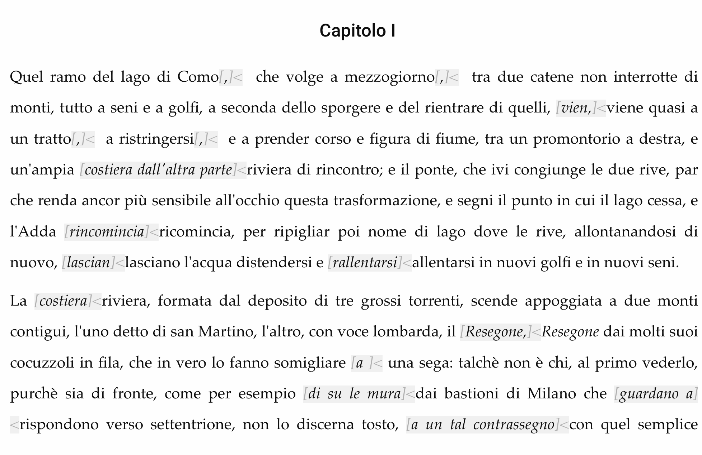
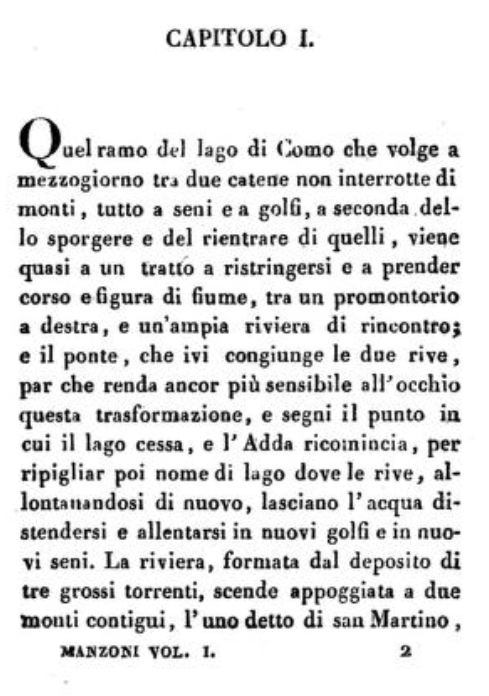
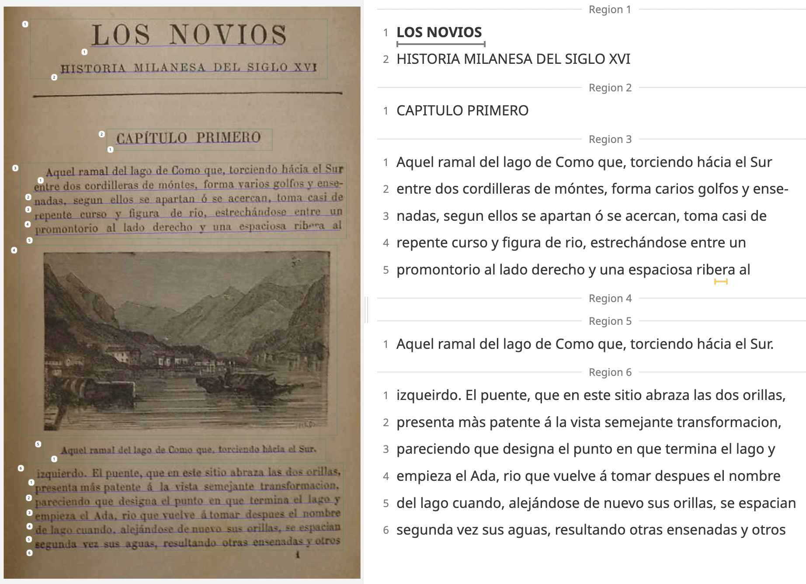

Workflow and Documentation
Workflow and Documentation
In order to create a high-quality, reliable, and valid project, it is essential to adhere to a well-defined project workflow and documentation which includes all the crucial steps that must be successfully completed to achieve excellent results.
-
Transcription and Exportation
Every project begins with a spark: in my case, the selection of texts that would become the foundation and reference samples for my project.
The focus was placed on two key texts: the original I promessi sposi written by Alessando Manzoni in italian and published in 1827 and one of its very first valid and reliable early Spanish translation.
After some exploration, two main sources were selected:
- Digitised edition of the original I promessi sposi written by Alessandro Manzoni and published in 1827 (Ventisettana), available on Internet Archive
- Digitised edition of the spanish translation of the Ventisettana entitled Los novios written by Juan Nicasio Gallego and published in 1836-7, accessible on I Promessi Sposi in Europa e nel mondo
From this point, the workflow split into two distinct tracks, based on the characteristics of the chosen sources and platforms.
Work began with the edition of I promessi sposi, hosted on Philoeditor.
In particular, the “clean” version of the text, excluding optional variants, was selected and then exported in TEI format.
Useful export TEI button and other buttons in Philoeditor
However, more than a simple transcription of the text was sought.
The TEI-exported version was compared line by line with the one available on Internet Archive, paying careful attention to page breaks, line endings, and other subtle textual details.
 I promessi sposi 1 chapter digitised edition by Claudia Bonsi coming from Philoeditor and
First chapter of the digitised edition of I promessi sposi coming from Internet Archive
Work continued with Los novios, hosted on Il Tesoro di I promessi sposi in Europa e nel mondo, specifically on the section Sfoglia le edizioni.
This section provided numerous translations of the original Ventisettana, including English, American English, German, French, and, notably, the Spanish edition published between 1836 and 1837 by Gallego written By Gallego. Gallego’s translation was available as page images and was processed using the Transkribus platform, a tool designed to transcribe both printed and handwritten texts with precision. Automatic transcription was not fully relied upon due to traces of age, damage, minor imperfections, and faded letters. So, all pages were manually reviewed and transcribed line by line to ensure accurate handling of omissions and gaps.
First chapter of the digitised edition of Los novios by Il Tesoro di I promessi sposi in Europa e nel mondo manually transcribed using Transkribus platform
Standard XML/TEI Creation
This project is designed to offer the user something beyond a simple, passive comparison of two digitized texts. Instead, it encourages the reader to engage with both texts side by side, experiencing them simultaneously rather than one after the other. This is the reason why two XML files, one for each reference text, were created.
XML (eXtensible Markup Language) is a general-purpose markup language for structuring data. It allows to create custom tags to organize information in a readable way both for humans and computers. It describes the abstract structure of a document, highlighting the logical part of the text, as in a standard grammar, but not the meaning of the content.
TEI (Text Encoding Initiative) is a specialized standard built on XML. It provides a set of predefined tags and rules to represent, exchange, and preserve data, giving consistent meaning to the text. It aims to achieve two key goals: developing an encoding model for representing texts in a digital environment, and making the text machine-readable and searchable.
Throughout the project, the Italian text remained my guiding primary reference model, the original source against which everything else was measured.
With it as anchor, the Spanish translation was closely examined, considering every subtle difference in structure and meaning.
The creation of these files was based on a basic XML TEI standard structure, outlined as follows:
<?xml version="1.0" encoding="UTF-8"?> <TEI xmlns="http://www.tei-c.org/ns/1.0"> <teiHeader> <fileDesc> <titleStmt> <title> </title> </titleStmt> <sourceDesc> <p> </p> </sourceDesc> </fileDesc> </teiHeader> <text> <body> <fw type="header" place="top" class="subtitle"></fw> <div type="chapter" n=""> <p></p> </div> </body> </text> </TEI>
Here you can take a look at the xml files created for the 2 texts: As you can notice, there are four available buttons becuase I preferred to create two XML versions for each text: a the simple version which is plain and ordinary and the improved version which is more engaing and interactive version:
TEI Element selection
What about the compulsory TEI Elements necessary to build the xml document?
The following table shows and provides a little explanation of the compulsory elements required to create the xml files previously shownXML Compulsory Elements Explanation Example <?xml version="1.0" encoding="UTF-8"?>XML declarationspecifies the version of the standard being used. <?xml version="1.0" encoding="UTF-8"?><TEI xmlns=”http://www.tei- c.org/ns/1.0”>XML root carries a namespace declaration: it specifies that all elements inside belong to a specific namespace, that in this case is TEI (Text Encoding Initiative) standard, version 1.0. <TEI xmlns=”http://www.tei- c.org/ns/1.0”><teiHeader></teiHeader>XML teiHeader element provides information that identifies the XML document itself, the file and all the sources (such as metadata) <teiHeader></teiHeader><fileDesc></fileDesc>XML fileDesc element is located inside the <teiHeader> element. It refers to the description of the XML file and it contains the metadata of the codified text <fileDesc></fileDesc><sourceDesc></sourceDesc>XML sourceDesc element is located inside the <teiHeader> element. It describes the source of the text and its purpose is to document where the material comes from, providing useful information for transparency and research. <sourceDesc> <bibl> <title>I promessi sposi: storia milanese del secolo 17. scoperta e rifatta da Alessandro Manzoni</title> <title type="part">Tomo primo, parte prima; tomo terzo, parte seconda</title> <publisher>Internet Archive</publisher> <pubPlace>Online</pubPlace> <date when="2014-12-06T14:48:33" type="modification" subtype="digital">2014-12-06 14:48:33</date> <idno type="url">https://archive.org/</idno> <idno type="collection">bncfirenze; europeanlibraries</idno> <idno type="topic">bub_upload</idno> <availability> <licence target="https://creativecommons.org/publicdomain/mark/1.0/"> Public Domain Mark 1.0 </licence> </availability> <language>Italian</language> </bibl> </sourceDesc><text></text>XML text element follows the <teiHeader> element. It refers to the proper encoding part of the text <text>
<body>
<fw type="header" place="top" class="subtitle">I PROMESSI SPOSI</fw>
<div type="chapter" n="CAPITOLO I.">...</div>
</body>
</text>
<body></body>XML body</strong> element is located <strong>inside the <text> element. It contains the text itself <body> <fw type="header" place="top" class="subtitle">I PROMESSI SPOSI</fw> <div type="chapter" n="CAPITOLO I."> <p>Quel ramo del <placeName type="lake">lago di Como</placeName> che volge a <lb/> mezzogiorno tra due catene non interrotte di <lb/> monti, tutto a seni e a golfi, a seconda del-<lb/></td>... </body>
Together with the compulsory elements, TEI provides a set of optional elements to enrich text encoding. The following table shows and provides a little explanation of the NON compulsory elements selected to capture more details about the texts and employed to create the xml files previously shown
XML NON Compulsory Elements Explanation Example <titleStmt></titleStmt>XML titleStmt is included inside the <teiHeader> element, in particular inside the <fileDesc> . It specifies the version of the standard being used. <titleStmt> <title>I Promessi Sposi</title> <author>Alessandro Manzoni</author> <respStmt> <resp>Improved TEI encoding</resp> <name>Alice Piazzi</name> </respStmt> </titleStmt><title></title>XML title is included inside the <teiHeader> element, in particular inside the <titleStmt>. In this case, it specifies the title of the chosen text. <title> I Promessi Sposi </title>
<title> Los novios </title><author></author>XML author is included inside the <teiHeader> element, in particular inside the <titleStmt>. In this case, it specifies the author of the original work. <author> Alessandro Manzoni </author>
<author> Juan Nicasio Gallego </author><respStmt></respStmt>XML respStmt is included inside the <teiHeader> element, in particular inside the <titleStmt>. In this case, it indicates responsibility for this TEI version.
It specifies the type of responsibility through the element <resp> and the responsible person of this TEI version through <name>.<respStmt> <resp>Improved TEI encoding</resp> <name>Alice Piazzi</name> </respStmt><publicationStmt></publicationStmt>XML publicationStmt is included inside the <teiHeader> element. In this case, it provides information about the publication of this TEI file.
It specifies the date of publication for the TEI edition through the element <date>, better clarified with the @when attribute which gives a machine-readable format of the date. Furthermore, though the element <availability>, it adds information about the availability of the encoded version since it is a scholarly project which can be used under precise restirctions.<respStmt> <date when="2025">2025</date> <availability><p>TEI edition is available for scholarly purposes only.</p></availability> </respStmt><bibl></bibl>XML bibl is included inside the <teiHeader> element, in particular inside the <sourceDesc>. In this case, It contains a bibliographic record of the source text that is not strictly structured.
It contains various different elements:
The elements <title> and <title type="part"> specifie the full title of the source, the element <publisher> specifies the source that published the work, the element <pubPlace> specifies the platform where the work is available, the element <date> clarifies the date associated with the digital source. It is enriched with the attribute @when which specifies the ISO 8601 format date of the digital source , the attribute @type specifies whether the date refers to the creation or the modification date of the digital source and the attribute @subtype indicates that this creation or modification date is related to the digital version and not the original one. There are other elements included in the element <bibl>: the element <idno> is a collection identifier that comes with the attribute @type which links the TEI record to the digital source on the web, another element <idno> with the attribute @type which identifies the collections that the source belongs to and another element <idno> with attribute @type indicates the specific topic of the colllection in which the work is preserved. There is the element <availability> contains access information for the source, in particular, it contains the element <licence> with the attribute @target that indicates the license under which the source is available. Finally it states that the work is in the public domain according to Creative Commons. The element <language> specifies the language of the source.<bibl> <title>I promessi sposi: storia milanese del secolo 17. scoperta e rifatta da Alessandro Manzoni</title> <title type="part">Tomo primo, parte prima; tomo terzo, parte seconda</title> <publisher>Internet Archive</publisher> <pubPlace>Online</pubPlace> <date when="2014-12-06T14:48:33" type="modification" subtype="digital">2014-12-06 14:48:33</date> <idno type="url">https://archive.org/</idno> <idno type="collection">bncfirenze; europeanlibraries</idno> <idno type="topic">bub_upload</idno> <availability> <licence target="https://creativecommons.org/publicdomain/mark/1.0/"> Public Domain Mark 1.0 </licence> </availability> <language>Italian</language> </bibl><head></head>XML head element can be found only in the xml file of I promessi sposi and it is included inside the <body> element. It is used to mark the title of the work.
. On<body> <head>I PROMESSI SPOSI</head> <head>LOS NOVIOS</head> <div type="chapter" n="CAPITOLO I."><fw></fw>XML fw element should be located inside the <body> element. It is a useful element to mark the running titles that appear at the beginning of each page. In this case, I wanted to use it to mark the running titles "LOS NOVIOS" and "CAPITULO I" showed in the spanish text, Los novios, but I chose not to include it in order to maintain consistency and parity with the italian text, in which such running titles are absent. Their inclusion would have introduced alignment issues during the parallel comparison of the two texts. In this case, the attributes @type and @place refer to the top centered position in which all the running tiutles are placed. <fw type="header" place="top"><CAPITULO </fw> <fw type="header" place="top"><LOS NOVIOS </fw><div></div>XML div element is located inside the <body> element. It deals with structural division and segments a text into logical parts. In this case it refers to chapter division and it appears here together with two attributes:
@type refers to the type of type of block it creates which is a chapter here,
@n refers to the numeration of the chapter it creates.<body> <head>I PROMESSI SPOSI</head> <div type="chapter" n="CAPITOLO I."><p></p>XML p element is located inside the <div> element. It is used to group a block of prose text into a coherent unit of text, like a paragraph in normal writing in this case. <div type="chapter" n="CAPITOLO I."> <p> Quel ramo del <placeName type="lake">lago di Como</placeName> che volge a <lb/> mezzogiorno tra due catene non interrotte di <lb/> monti, tutto a seni e a golfi, a seconda del- <lb/> lo sporgere e del rientrare di quelli ... </p><lb/>XML lb/ element is located in corrispondence of the line breaks. It is a milestone element because it monitors line breaks in the text. I chose to use it to create a reliable version that gtaphically resembles the source text by maintaing both its line breaks and the original formatting. <p> Quel ramo del <placeName type="lake">lago di Como</placeName> che volge a <lb/> mezzogiorno tra due catene non interrotte di <lb/> monti, tutto a seni e a golfi, a seconda del- <lb/> lo sporgere e del rientrare di quelli ... </p><persName></persName>XML persName element is located inside the <p> element. It allows me to mark and higlhight the the name of the characters mentioned in the texts. Furthermore, I decided to use it enriched by the attirute @type to better specify the type that it refer to the characters. of character I am marking: The attribute @type comes with character value <p>... e l'<persName type="character">don Abbondio</persName>...<p><placeName></placeName>XML placeName element follows the <p> element. It allows me to mark and higlhight the the name of the places mentioned in the texts. Furthermore, I decided to use it enriched by the attirute @type to better specify the type of place I am marking: The attribute @type comes with river, lake, muntain and city values <p>...e l'<placeName type="river">Adda</placeName>...<p><date></date>XML date element is located inside the <p> element. It allows me to mark and higlhight the the dates annotated in the texts. Furthermore, I decided to use it enriched by the attirute @when, when possible, to better describe the precise and complete date made of year, month and day. <p>...Fino dagli <date when="1583-04-08">otto d'aprile dell'anno 1583</date> <lb/>...<p><said who="" toWhom=""></said>XML said element is located inside the <p> element. It is used to mark direct speech in a structured way, it’s especially useful in narratives with multiple characters because it allows to keep track of dialogue participants. It comes with the attributes @whom="" and @toWhom="", the first specifies who is speaking, while the second one who is the listener. <said who="one of the two bravi" toWhom="the other one">: egli è desso</said><gap></gap>XML gap element is located inside the <p> element. I used it to mark part of the text, indicated wiht the sigla (g1) acting as a reference label, that the spanish translator omitted with respect to the original italian work of Manzoni. It comes with the attributes @corresp="", @xml:id="" and @reason="". The first one points to another <gap> element which has attribute @xml:id="" withe the same "gap1" value, this is the target of the reference which contains the actual omitted text in the Spanish version. . This allows to create a two-way link between the texts, in which the complete inline marker points to the omission and viceversa. The last one allows to filter by different kinds of gaps according to the attribute which specifiesthe type of omission, in this case a simple "omission". <gap corresp="#gap1" reason="omission"><seg>(g1)</seg> e che dà nome al territorio,<lb/> giace poco discosto dal ponte, alla riva del<lb/> lago, anzi viene in parte a trovarsi nel lago<lb/> stesso, quando egli ingrossa:</gap>
<gap xml:id="gap1" reason="omission"><seg>(g1)</seg></gap><add></add>XML add element is located inside the <p> element. I used it to mark part of the text, indicated wiht the sigla (a1) acting as a reference label, that the spanish translator added with respect to the original italian work of Manzoni. It comes with the attributes @corresp="", @xml:id="" and @reason="". The first one points to another <add> element which has attribute @xml:id="" withe the same "add1" value, this is the target of the reference which contains the actual addition text in the Spanish version. This allows to create a two-way link in which the short inline marker points to the longer explanatory addition and viceversa. The last one allows to filter by different kinds of additions according to the attribute which specifiesthe type of addition, in this case a simple "addition". <add corresp="#add1" reason="addition"><seg>(a1)</seg></add>
<add xml:id="add1" reason="addition"> <seg>(a1)</seg>No léjos del puente y tan cerca del lago, que en las grandes<lb/> avenidas llega á circundarla, está situada</add><mod></mod>XML mod element is located inside the <p> element. I used it to mark part of the italian text which is rendered in a modified way in the spanish one, since the spanish translator gave it a different interpretation. It comes with the attributes @corresp="", @xml:id="", @type="" and @reason="".
The first one points to another <gap> element which has attribute @xml:id="" withe the same "mod1" value, this is the target of the reference which contains the actual modified text in the Spanish version. This allows to create a bi-directional link in which the short inline marker points to the modified version and viceversa. The attribute type="" comes with value "translation" and clarifies the nature of the relationship, while the last attribute @reason="" comes with value "interpretation" and specifies that it involves interpretative choices.<mod corresp="#mod1" type="translation" reason="interpretation"> <seg>(m1)</seg>ci mette-<lb/>rebbe in sacco</mod>
<mod xml:id="mod1" type="translation" reason="interpretation"> <seg>(m1)</seg> no sal-<lb/>dríamos bien librados </mod><mod></mod>Two different variants of the element mod can be dentified by checking the values of the attributes @corresp="",xml:id="" and @reason="".
<mod corresp="#mod4" type="translation" reason="interpretation"><seg corresp="#Mm4" reason="Minterpretation">(Mm4)</seg></mod> marks a light and subtle modification. It represents one of the observations pronounced by María de las Nieves Muñiz Muñiz by marking it with the reference label "Mm". Knows as a very famous Spanish philologist, translator and Italianist, who studied the texts of Manzoni and Gallego (Muñiz Muñiz, Nuovi quaderni del CRIER, 2012, ).
<mod corresp="#mod10" type="translation" reason="idiomatic"><seg corresp="#Im1" reason="TPidiomatic">(Im1)</seg></mod> marks a semantic modification. It represents a spanish modifications which inserts a spanish local idiomatic expression discovered and studied by Beatrice Pecchiari in mester's thesis Los Novios. La ricezione dei Promessi sposi nella Spagna dell’Ottocento, by marking it with the reference label "Im" .<mod corresp="#mod1" type="translation" reason="interpretation"> <seg>(m1)</seg>ci mette-<lb/>rebbe in sacco</mod>
<mod xml:id="mod1" type="translation" reason="interpretation"> <seg>(m1)</seg> no sal-<lb/>dríamos bien librados </mod>
<mod corresp="#mod10" type="translation" reason="idiomatic"><seg corresp="#Im1" reason="TPidiomatic">(Im1)</seg>E io ho sempre veduto che a chi sa mo- strare i denti, e farsi valere, si porta rispetto</mod>
<mod xml:id="mod10" type="translation" reason="idiomatic"> <seg xml:id="#Im1" reason="TP1idiomatic">(Im1)</seg> dice bién el refran, que al que se hace de miel las moscas se lo comen</mod><seg></seg>XML seg element is located inside the <add>, <gap>, <abbr> or the <mod> element. It is used to mark a portion of text for reference. (m1) acts like a label and allows to connect italian and spanish pieces of texts easily. In particular, in the cases of the interpretation version studied by Muñiz Muñiz and idiomatic version studied by Pecchiari, a specific meaning is added through attributes @corresp="", xml:id="" and reason="".
These attributes allowed me to introduce a popup that appears whenever the user hovers over the text. The popup serves as a small guide, clarifying why those passages were marked and how they differ from the surrounding text.<abbr corresp="#abbr1" reason="abbre"><seg>(ab1)</seg>Sua Mae-<lb/> stà Cattolica</abbr>
<abbr xml:id="abbr1" reason="abbre"><seg>(ab1)</seg>S. M. C.</abbr><abbr></abbr>XML abbr element is located inside the <p> element. It is used to mark abbreviated names to make the user understand that, even if they are not written in the same way, the refer to the same thing/person. In particular it focuses on names which are written in abbreviated forms, such es "S. M. C."", in spanish text and in cmplete long form, such as "Sua Maestà Cattolica", in italian text. <abbr corresp="#abbr1" reason="abbre"><seg>(ab1)</seg>Sua Mae-<lb/> stà Cattolica</abbr>
<abbr xml:id="abbr1" reason="abbre"><seg>(ab1)</seg>S. M. C.</abbr><figure></figure>The XML <figure> element is placed inside the <div> element and is used to represent an image of the Spanish text. It is assigned a unique identifier @xml:id="". The attribute @corresp="" links the figure to a gap in the text, indicating where the image substitutes missing content.
The <img> element points to the actual image file in the project folder, allowing the user to view it, while <figDesc> provides a descriptive caption corresponding to the Spanish text itself.
Finally, the <add> element, with the attributes @rend="" and @corresp="", serves as an editorial marker. It makes explicit that this figure is present in the Spanish edition but not in the original Italian manuscript.<add rend="nofigure" corresp="#f1">(Added F.1)</add> <figure xml:id="f1" corresp="#gap1"> <img src="assets/img/losnoviosimgp1.png" /> <figDesc>(F.1)Aquel ramal del lago de Como que, torciendo hácia el Sur.</figDesc> </figure><back></back>The XML <back> element is placed inside the <TEI> element and after the <text> element and is used to mark the final part of a text: everything that comes after the main body.
It contains any annex or appendix that follows the main part of a text.<back> <listPerson> <person xml:id="donabbondio" role="character"> <persName type="full">Don Abbondio</persName> <persName type="abbr">D. Abbondio</persName> <persName type="alias">curato</persName> <persName type="name">Abbondio</persName> </person> <person xml:id="bravi" role="character"> <persName type="full">bravi</persName> <persName type="alias">vagabondi</persName> <persName type="combined">bravi e vagabondi</persName> </person> </listPerson> </back><listPerson></listPerson>The XML <listPerson></listPerson> element is placed inside the <back> element and is used as a container element in TEI. It groups together multiple <person> elements into a structured list of people for both the italian and spanish texts.
In this case it is used to record all the characters with their possible names and identifiers.<back> <listPerson> <person xml:id="donabbondio" role="character"> <persName type="full">Don Abbondio</persName> <persName type="abbr">D. Abbondio</persName> <persName type="alias">curato</persName> <persName type="name">Abbondio</persName> </person> <person xml:id="bravi" role="character"> <persName type="full">bravi</persName> <persName type="alias">vagabondi</persName> <persName type="combined">bravi e vagabondi</persName> </person> </listPerson> </back><person></person>The XML <person></person> element is placed inside the <listPerson> element and is used to encode information about a character mentioned in both the italian and spanish text.
It is enriched by two attributes that come together with it which are @xml:id and @role. @xml:id is a a unique identifier for that person, in this case it focuses two mentioned characters "donabbondio" and "bravi" to identify and mark alternative forms of the name, always connected to the primary original version. @role specifies their role, which in thi case is character for both. The only difference in the spanish codeis the addition to the element of the attribute @xml:lang="es" which specifies that, as well as the text, the names of the characters have been translated too.<back> <listPerson> <person xml:id="donabbondio" role="character"> <persName type="full">Don Abbondio</persName> <persName type="abbr">D. Abbondio</persName> <persName type="alias">curato</persName> <persName type="name">Abbondio</persName> </person> <person xml:id="bravi" role="character"> <persName type="full">bravi</persName> <persName type="alias">vagabondi</persName> <persName type="combined">bravi e vagabondi</persName> </person> </listPerson> </back>
<back> <listPerson> <person xml:id="donabundo" role="character" xml:lang="es"> <persName type="full">Don Abundo</persName> <persName type="abbr">D. Abundo</persName> <persName type="alias">cura</persName> </person> <person xml:id="bravi" role="character" xml:lang="es"> <persName type="full">bravos</persName> <persName type="alias">vagamundos</persName> <persName type="combined">bravos e vagamundos</persName> </person> </listPerson> </back><persName></persName>The XML <persName></persName> element is placed inside the <person> element and is used to mark up a personal name, in particular, to encode different forms of each person’s name in both the italian and spanish texts.
It helps encode the name itself and the type, variations, and structure of that name. It is enriched by attribute that comes together with it which is @type. It specifies what kind of name it is.- type="full" → the full name (Don Abbondio),
- type="abbr" → an abbreviation (D. Abbondio),
- type="alias" → an alternative name or title (curato),
- type="name" → just the simple name,
- type="combined" → when multiple forms are merged (bravi e vagabondi).
<back> <listPerson> <person xml:id="donabbondio" role="character"> <persName type="full">Don Abbondio</persName> <persName type="abbr">D. Abbondio</persName> <persName type="alias">curato</persName> <persName type="name">Abbondio</persName> </person> <person xml:id="bravi" role="character"> <persName type="full">bravi</persName> <persName type="alias">vagabondi</persName> <persName type="combined">bravi e vagabondi</persName> </person> </listPerson> </back> <back> <listPerson> <person xml:id="donabundo" role="character" xml:lang="es"> <persName type="full">Don Abundo</persName> <persName type="abbr">D. Abundo</persName> <persName type="alias">cura</persName> </person> <person xml:id="bravi" role="character" xml:lang="es"> <persName type="full">bravos</persName> <persName type="alias">vagamundos</persName> <persName type="combined">bravos e vagamundos</persName> </person> </listPerson> </back><pb n=""/>XML pb/ element is located inside the <div> element. is located in corrispondence of the line breaks, so at the end of the page.. It is important because it monitors page break in thte text. I chose to use it to create a reliable version that gtaphically resembles the source text by maintaing both its page breaks and the original formatting. It comes together with the attribute @n="" that allows to count adn remeber the numenr of the current page. </p> <pb n="1"/> </div>From XML to HTML through XSLT
Once we had our XML files ready, the next challenge was to bring them to life on the web.
That’s where XSLT came in.
XSLT stands for Extensible Stylesheet Language Transformations and it is an XML-based language used to transform XML documents into other formats, whether plain text, different XML structures, or, in our case, HTML.
The mission was simple, yet crucial: turn the structured XML into clean, readable HTML. Think of XSLT as a translator that understands the language of XML and knows exactly how to present it in a new form—reorganizing the content and bringing it to life on the web. It allows to define exactly how each piece of data should be organized, styled, and displayed."
Here you can have look at the two separated XSLT stylesheets I used to transform the initial TEI XML documents into styled and readable HTML pages.
<?xml version="1.0" encoding="UTF-8"?> <xsl:stylesheet version="2.0" xmlns:xsl="http://www.w3.org/1999/XSL/Transform" xmlns:tei="http://www.tei-c.org/ns/1.0" exclude-result-prefixes="tei"> <xsl:output method="html" indent="yes" encoding="UTF-8"/> <!-- TEI Template --> <xsl:template match="tei:TEI"> <html> <head> <title> <xsl:value-of select="tei:teiHeader/tei:fileDesc/tei:titleStmt/tei:title"/> </title> <style> body { font-family: Georgia, serif; line-height: 1.5; max-width: 95%; margin: auto; padding: 1em; background-color: #beb3a4; } .persName { font-weight: bold; color: darkblue; } .placeName { font-weight: bold; color: #0C9F43; } .date { font-weight: bold; color: #DC19A3; } .lineBreak { display: inline; } .pageBreak { margin: 2em 0; padding-top: 1em; border-top: 1px solid #ccc; text-align: center; font-size: 0.9em; font-style: italic; color: #777; } .readability-mode { font-family: "Georgia", serif; font-size: 1.1em; line-height: 3; background-color:rgba(253, 246, 227, 0.51); color: #333333; max-width: 60%; margin: auto; padding: 2em; text-align:center; word-spacing: 0.5em; } button { background-color:#635548; color: #beb3a4; } </style> <script> window.onload = function() { document.getElementById("toggleReadability").addEventListener("click", function() { document.body.classList.toggle("readability-mode"); }); }; </script> </head> <body> <button id="toggleReadability" type="button">Better readability</button> <br/> <br/> <xsl:apply-templates select="tei:text/tei:body"/> </body> </html> </xsl:template> <!-- Keep other templates as the previous version --> <xsl:template match="tei:body"> <xsl:apply-templates/> </xsl:template> <xsl:template match="tei:fw"> <h3> <xsl:apply-templates/> </h3> </xsl:template> <xsl:template match="tei:div[@type='chapter']"> <div class="chapter"> <h2> <xsl:value-of select="@n"/> </h2> <xsl:apply-templates/> </div> </xsl:template> <xsl:template match="tei:div[not(@type)]"> <div> <xsl:apply-templates/> </div> </xsl:template> <xsl:template match="head"> <h1><xsl:value-of select="."/></h1> </xsl:template> <xsl:template match="tei:p"> <p> <xsl:apply-templates/> </p> </xsl:template> <xsl:template match="tei:lb"> <br class="lineBreak"/> </xsl:template> <xsl:template match="tei:pb"> <div class="pageBreak"> <strong>Page <xsl:value-of select="@n"/></strong> </div> </xsl:template> <xsl:template match="tei:placeName"> <span class="placeName"> <xsl:apply-templates/> </span> </xsl:template> <xsl:template match="tei:persName"> <span class="persName"> <xsl:apply-templates/> </span> </xsl:template> <xsl:template match="tei:date"> <span class="date"> <xsl:apply-templates/> </span> </xsl:template> <xsl:template match="said"> <p class="speech"> <span class="speaker"> <xsl:value-of select="@who"/>: </span> <span class="utterance"> «<xsl:value-of select="."/>» </span> <xsl:if test="@toWhom"> <span class="toWhom">to <xsl:value-of select="@toWhom"/></span> </xsl:if> </p> </xsl:template> <xsl:template match="text()"> <xsl:value-of select="."/> </xsl:template> </xsl:stylesheet>
<?xml version="1.0" encoding="UTF-8"?> <xsl:stylesheet version="2.0" xmlns:xsl="http://www.w3.org/1999/XSL/Transform" xmlns:tei="http://www.tei-c.org/ns/1.0" exclude-result-prefixes="tei"> <xsl:output method="html" indent="yes" encoding="UTF-8"/> <!-- TEI Template --> <xsl:template match="tei:TEI"> <html> <head> <title> <xsl:value-of select="tei:teiHeader/tei:fileDesc/tei:titleStmt/tei:title"/> </title> <style> body { font-family: Georgia, serif; line-height: 1.5; max-width: 95%; margin: auto; padding: 1em; background-color: #beb3a4; } .persName { font-weight: bold; color: darkblue; } .placeName { font-weight: bold; color: #0C9F43; } .date { font-weight: bold; color: #DC19A3; } .lineBreak { display: inline; } .pageBreak { margin: 2em 0; padding-top: 1em; border-top: 1px solid #ccc; text-align: center; font-size: 0.9em; font-style: italic; color: #777; } .figure-block { margin: 1em 0; max-width: 40%; clear: both; } .figure-block img { width: 100%; height: auto; display: block; margin: 0 auto; } .figure-block figcaption { font-size: 0.85em; color: #555; text-align: center; margin-top: 0.5em; } figure + * { clear: both; } .readability-mode { font-family: "Georgia", serif; font-size: 1.1em; line-height: 3; background-color: rgba(253, 246, 227, 0.51); color: #333333; max-width: 60%; margin: auto; padding: 2em; text-align:center; word-spacing: 0.5em; } button { background-color:#635548; color: #beb3a4; } .readability-mode figure { margin: 1em auto; max-width: 40%; } .readability-mode figure img { display: block; margin: 0 auto; width: 100%; height: auto; } .readability-mode figure figcaption { font-size: 0.85em; color: #555; text-align: center; margin-top: 0.5em; } #bigphoto { max-height: 5px; width: auto; } </style> <script> window.onload = function() { document.getElementById("toggleReadability").addEventListener("click", function() { document.body.classList.toggle("readability-mode"); }); }; </script> </head> <body> <button id="toggleReadability" type="button">Better readability<i class="bi bi-eyeglasses"></i></button> <br/> <br/> <xsl:apply-templates select="tei:text/tei:body"/> </body> </html> </xsl:template> <!-- keep other template as the previous version --> <xsl:template match="tei:body"> <xsl:apply-templates/> </xsl:template> <xsl:template match="tei:fw"> <h3> <xsl:apply-templates/> </h3> </xsl:template> <xsl:template match="tei:div[@type='chapter']"> <div class="chapter"> <h2> <xsl:value-of select="@n"/> </h2> <xsl:apply-templates/> </div> </xsl:template> <xsl:template match="tei:div[not(@type)]"> <div> <xsl:apply-templates/> </div> </xsl:template> <xsl:template match="head"> <h1><xsl:value-of select="."/></h1> </xsl:template> <xsl:template match="tei:p"> <p> <xsl:apply-templates/> </p> </xsl:template> <xsl:template match="tei:lb"> <br class="lineBreak"/> </xsl:template> <xsl:template match="tei:pb"> <div class="pageBreak"> <strong>Page <xsl:value-of select="@n"/></strong> </div> </xsl:template> <xsl:template match="tei:placeName"> <span class="placeName"> <xsl:apply-templates/> </span> </xsl:template> <xsl:template match="tei:persName"> <span class="persName"> <xsl:apply-templates/> </span> </xsl:template> <xsl:template match="tei:date"> <span class="date"> <xsl:apply-templates/> </span> </xsl:template> <xsl:template match="tei:figure"> <figure class="figure-block"> <xsl:apply-templates select="tei:img"/> <figcaption> <xsl:apply-templates select="tei:figDesc"/> </figcaption> </figure> </xsl:template> <xsl:template match="tei:img"> <img> <xsl:attribute name="src"> <xsl:value-of select="@src"/> </xsl:attribute> <xsl:attribute name="alt"> <xsl:value-of select="../tei:figDesc"/> </xsl:attribute> <xsl:attribute name="bigphoto"> <xsl:value-of select="bigphoto"/> </xsl:attribute> </img> </xsl:template> <xsl:template match="said"> <p class="speech"> <span class="speaker"> <strong><xsl:value-of select="@who"/>:</strong> </span> <span class="utterance"> «<xsl:value-of select="."/>» </span> <xsl:if test="@toWhom"> <span class="toWhom"> (to <xsl:value-of select="@toWhom"/>)</span> </xsl:if> </p> </xsl:template> <xsl:template match="text()"> <xsl:value-of select="."/> </xsl:template> </xsl:stylesheet>
Brief explanation
The main purposes of these codes:
1. Taking a TEI-XML file,
2. Transforming it into HTML that can be displayed in a web browser.
3. Applying CSS styles to improve readability, such as fonts, colors, spacing, highlighting of names, places, dates,
4. Including a small JavaScript script that adds a button to toggle a “better readability mode” button which can be exploited by the user to read the text in easier way.
Main Template - <xsl:template match="tei:TEI">
The main template is the set of instructions that XSLT applies when it finds the root element <TEI> of the TEI-XML document.
The <TEI> is the container of the entire TEI file that means that this template is basically the entry point of the whole transformation into HTML.
The transformation begins by creating an <html> element which conists in the the root of the output HTML page. Inside it, it starts building:- <head> section → XSLT creates the HTML .
- <title> section → In HTML, the <title> element defines the title of the web page displayed in the browser tab. Inside <title>, it dynamically extracts the document’s title from the TEI header path: tei:teiHeader → tei:fileDesc → tei:titleStmt → tei:title.
<xsl:value-of select="..."> allows you to get and insert the text value of this element. As a result, the page’s <title> will automatically contain the work’s title from the TEI header. - <style> section → injects CSS for layout and formatting directly into the page. It specifies how the text and special elements, such as names, places, dates, page breaks, etc., will appear in the browser (font, margins, colors, spacing, background,)
As a result the HTML output is already styled for readability. - <script> section → adds a small piece of JavaScript which, once toggled, allows the user to read the text in a easier and clearer way. So, the reader can switch between normal mode and readability mode
- <body> section → Starts the visible content of the HTML page. First of all it inserts a the button "Better readability”, then it uses <xsl:apply-templates select="tei:text/tei:body"/> to process the <body> content of the TEI document using the other templates subsequently defined such as paragraphs, chapters, page breaks, figures, etc.
Specific Templates - Transformation Rules
- Chapters
<xsl:template match="tei:div[@type='chapter']"></xsl:template> → <div type="chapter"> becomes an HTML <div> with a chapter heading. - Page and Line Breaks
<xsl:template match="tei:lb"></xsl:template> → Line breaks (lb) produces a line break in the browser. It transforms it into an HTML <br> with the CSS class .lineBreak
<xsl:template match="tei:lb"></xsl:template> → Page Break (pb) template handles <pb> elements (page breaks in TEI). It transforms them into an HTML block <div class="pageBreak">. Inside this <br> there is <strong>Page N</strong> where N is taken from the @n attribute of the <pb> element (the original page number from the source text). - Named Entities
<xsl:template match="tei:persName"></xsl:template> → People are wrapped in <span> tags with CSS class .persName to style them in dark blue color ( {font-weight: bold; color: darkblue;} ).
<xsl:template match="tei:placeName"></xsl:template> → Places are enclosed in elements with the CSS class .placeName, which applies them a green color ( {font-weight: bold; color: #0C9F43;} ).
<xsl:template match="tei:date"></xsl:template> → Dates are marked with elements using the CSS class .date which renders them in fuchsia color ( {font-weight: bold; color: #DC19A3;} ).
- Dialogues
<xsl:template match="said"></xsl:template> → A said <who="...">...</said> element becomes a paragraph with the speaker’s name, speech text, and optionally the addressee (toWhom). - Plain Text
<xsl:template match="text()"></xsl:template> → Any text not covered by other rules is copied as it is. - Figures & Images (existing only in the spanish work)
Support for figures and images is added by converting <tei:figure> into <figure>, <tei:img> into <img>, and <tei:figDesc> into <figcaption>.
<xsl:template match="tei:figure"> </xsl:template> → A TEI <figure> becomes an HTML <figure>.
<xsl:apply-templates select="tei:img"/> → <tei:img> is processed and inserted as <img>
This <img> creates an HTML <img> tag that sets the src attribute from the TEI image’s @src and that sets the alt attribute (alternative text) using the figure description (figDesc).
<xsl:apply-templates select="tei:figDesc"/> → <tei:figDesc>, that refers to the description of the figure, becomes a <figcaption> which is the caption under the image.
To truly and fully grasp the differences between the two texts, the user should be able to see them displayed side by side, visually unfolding their contrasts at a glance.
As a matter of fact, unlike the single XSL files designed to handle one text at a time, these texts can be read simultaneously, as they are displayed in two columns: I Promessi Sposi in Italian on the right, and Los Novios in Spanish on the left.
Check out here the XSL file developed to grpahically represent this comparison.
<?xml version="1.0" encoding="UTF-8"?> <xsl:stylesheet version="1.0" xmlns:xsl="http://www.w3.org/1999/XSL/Transform" xmlns:tei="http://www.tei-c.org/ns/1.0" exclude-result-prefixes="tei"> <xsl:output method="html" encoding="UTF-8" indent="yes"/> <xsl:template match="/"> <html> <head> <title>2 texts comparison page</title> <link href="https://cdn.jsdelivr.net/npm/bootstrap@5.3.0/dist/css/bootstrap.min.css" rel="stylesheet"/> <link href="https://cdn.jsdelivr.net/npm/bootstrap-icons/font/bootstrap-icons.css" rel="stylesheet"/> <style> body { font-family: Georgia, serif; line-height: 1.5; max-width: 95%; margin: auto; padding: 1em; background-color: #beb3a4 } .columns { display: flex; gap: 2em; align-items: flex-start; } .column { flex: 1; min-width: 0; } h2 { text-align: center; margin-top: 0; } .persName { font-weight: bold; color: darkblue; } .placeName { font-weight: bold; color: #0C9F43 ; } .date { font-weight: bold; color: #DC19A3; } .lineBreak { display: inline; } .pageBreak { margin: 2em 0; padding-top: 1em; border-top: 1px solid #ccc; text-align: center; font-size: 0.9em; font-style: italic; color: #777; } .subtitle{ color: #A1243B; } .inline-figure { float: left; margin: 0 1em 1em 0; max-width: 40%; } .inline-figure img { width: 100%; height: auto; } .inline-figure figcaption { font-size: 0.85em; color: #555; } high-readability { font-family: "Arial", sans-serif; font-size: 1.2em; line-height: 1.8; } #Btnips, #Btnln, #fullscreenBtnips, #fullscreenBtnln { color: #f4fafd; background-color: #635548; height: 40px; width: 40px; } .legend-container { margin-bottom: 1em; font-family: sans-serif; } .legend-checkbox { display: none; } .legend-toggle { display: inline-block; background-color: #635548; color: #f4fafd; padding: 8px 16px; cursor: pointer; font-weight: bold; border-radius: 6px; } .legend-content { max-height: 0; overflow: hidden; transition: max-height 0.3s ease; border: 1px solid #ccc; padding: 0 10px; background-color: #ffffff; border-radius: 10px; margin-top: 5px; width:200px; } .legend-checkbox:checked + .legend-toggle + .legend-content { max-height: 800px; padding: 10px; } </style> </head> <body> <div class="legend-container"> <input type="checkbox" id="legend-toggle" class="legend-checkbox"/> <label for="legend-toggle" class="legend-toggle">Legend</label> <div class="legend-content"> <p class="persName"> Characters</p> <p class="placeName"> Places</p> <p class="date"> Dates</p> </div> </div> <div class="columns"> <div class="column"> <h2>I promessi sposi by Manzoni</h2> <xsl:apply-templates select="/tei:TEI/tei:text/tei:body"/> </div> <div class="column"> <h2>Los novios by Gallego</h2> <xsl:apply-templates select="document('los_novios_TEI_completo_full.xml')/tei:TEI/tei:text/tei:body"/> </div> </div> </body> </html> </xsl:template> <xsl:template match="tei:figure"> <figure class="inline-figure"> <xsl:apply-templates select="tei:img"/> <figcaption> <xsl:apply-templates select="tei:figDesc"/> </figcaption> </figure> </xsl:template> <xsl:template match="tei:img"> <img> <xsl:attribute name="src"> <xsl:value-of select="@src"/> </xsl:attribute> <xsl:attribute name="alt"> <xsl:value-of select="../tei:figDesc"/> </xsl:attribute> </img> </xsl:template> <xsl:template match="tei:persName"> <span class="persName"><xsl:apply-templates/></span> </xsl:template> <xsl:template match="tei:placeName"> <span class="placeName"><xsl:apply-templates/></span> </xsl:template> <xsl:template match="tei:date"> <span class="date"><xsl:apply-templates/></span> </xsl:template> <xsl:template match="tei:lb"> <br class="lineBreak"/> </xsl:template> <xsl:template match="tei:pb"> <div class="pageBreak">Page <xsl:value-of select="@n"/></div> </xsl:template> <xsl:template match="tei:figure"> <figure style="margin: 1em 0;"> <xsl:apply-templates select="tei:img"/> <figcaption style="font-size: 0.85em; color: #555; margin-top: 0.3em;"> <xsl:apply-templates select="tei:figDesc"/> </figcaption> </figure> </xsl:template> <xsl:template match="tei:img"> <img style="max-width: 100%; height: auto;"> <xsl:attribute name="src"> <xsl:value-of select="@src"/> </xsl:attribute> <xsl:attribute name="alt"> <xsl:value-of select="../tei:figDesc"/> </xsl:attribute> </img> </xsl:template> <xsl:template match="said"> <p class="speech"> <span class="speaker"> <strong><xsl:value-of select="@who"/>:</strong> </span> <span class="utterance"> «<xsl:value-of select="."/>» </span> <xsl:if test="@toWhom"> <span class="toWhom"> (to <xsl:value-of select="@toWhom"/>)</span> </xsl:if> </p> </xsl:template> <xsl:template match="*"> <xsl:element name="{local-name()}"> <xsl:apply-templates/> </xsl:element> </xsl:template> <xsl:template match="text()"> <xsl:value-of select="."/> </xsl:template> </xsl:stylesheet>
Brief explanation
The transformation of the TEI-XML document into a readable HTML page, with two side-by-side columns comparing two texts, is made of the following steps:
- Declaration and namespaces
tei: namespace → useful to recognize TEI elements
exclude-result-prefixes → ensures the tei prefix does not appear in the final output. - HTML output
<xsl:output method="html" encoding="UTF-8" indent="yes"/> → transformation produces formatted HTML in UTF-8. - Main template
<xsl:template match="/"> → builds the entire HTML page, which includes <head> and <body>.
The <body>is made up of two columns, which are populated with:
<xsl:apply-templates select="/tei:TEI/tei:text/tei:body"/> → extracts text from the main TEI file
<xsl:apply-templates select="document('los_novios_TEI_completo_full.xml')/tei:TEI/tei:text/tei:body"/> → imports and displays text from an external document
- Declaration and namespaces
It use the tei: namespace to recognize TEI elements
exclude-result-prefixes ensures the tei prefix does not appear in the final output. - HTML AND HEAD sections
Metadata and CSS are inserted inside <html><head>...</head>:
<title> → sets the page title.
<link> → loads Bootstrap CSS and Bootstrap icons.
<style> → customs CSS for fonts, layout, colors, tooltip, legend, etc.
A useful legend block appears at the top-left corner of the page and allows the user to understand what the colorsused in the texts refers to.
Two-column layout enables the the user to see the two columns displayed side by side.
- TEI element templates
<xsl:template match="tei:figure" >
<figure class="inline-figure">
<xsl:apply-templates select="tei:img"/>
<figcaption> <xsl:apply-templates select="tei:figDesc"/> → transforms <tei:figure> into HTML <figure> together with <img> and <figcaption>. @src and @alt attributes of <img> that refer to the caption text and allow good accessibility are handled too.
- Named entities
<xsl:template match="tei:persName"> <span class="persName"> <xsl:apply-templates/> </span> </template > → wraps content in a styled <span> so it appears bold and colored in the text. And the same goes for placeNames and dates. - Line & Page breaks
<xsl:template match="tei:lb">
<br class="lineBreak"/> → converts TEI <lb/>, manually marked following the original texts, into HTML <br/>.
- Dialogue
<xsl:template match="said">
<p class="speech"> ...
</p> → it’s specialized for direct speech in the TEI markup: it converts every <said> in a separate paragraph representing dialogue.
<span class="speaker"> → wraps speaker’s name and pulls the associated @who attribute from the <said>tag. <span class="utterance"> → wraps the actual spoken text, it adds typographic quotation marks around the speech..« - Catch-All Rules
<xsl:template match="*"></xsl:template> → refers to the default rule for elements not covered.
<xsl:template match="text()">→ refers to the default handling for plain text, which consists in just copying it into output.
Thereafter, I created a Python script which uses the lxml library to load a TEI XML file previously created, to apply an XSLT stylesheet containing the transformation rules from TEI to HTML and to produce a nicely formatted and ready to be opened in a web browser HTML file
from lxml import etree # Load the TEI XML file (input) xml_file = 'assets/xml/ipromessisposi_cap1.xml' # Load the XSLT file (stylesheet) xslt_file = 'assets/xml/visuaips.xsl' # Parse the files xml_doc = etree.parse(xml_file) xslt_doc = etree.parse(xslt_file) # Create the transformation object transform = etree.XSLT(xslt_doc) # Apply the transformation result = transform(xml_doc) # Save the result as an HTML file with open('visuaipsoutput.html', 'wb') as f: f.write(etree.tostring(result, pretty_print=True, method='html', encoding='UTF-8')) print("Trasformazione completata, file output.html creato.")from lxml import etree # File paths xml_file = '/Users/alicep/Downloads/DSE -theories, methods and practice/iPortfolio/assets/xml/ipromessisposi_cap1.xml' # il tuo XML principale xsl_file = '/Users/alicep/Downloads/DSE -theories, methods and practice/iPortfolio/assets/xml/renzolucia.xsl' # il foglio XSLT # Load the files xml = etree.parse(xml_file) xsl = etree.parse(xsl_file) # Create the XSLT transformation transform = etree.XSLT(xsl) # Apply the transformation result = transform(xml) # Save the output to an HTML file output_file = 'output.html' with open(output_file, 'wb') as f: f.write(etree.tostring(result, pretty_print=True, method='html', encoding='UTF-8')) print(f"File salvato come {output_file}. Aprilo con un browser per vedere il risultato.")
Brief explanation
- Import the library and its module
from lxml import etree → etree is the module imported from lxml library that handles XML and XSLT processing. - Define file paths
xml_file = 'assets/xml/ipromessisposi_cap1.xml' → xml_file is the path to the input XML file, here a chapter from I Promessi Sposi encoded in TEI (the same goes for the XML of Los novios)
xslt_file = 'assets/xml/visuaips.xsl' → xslt_file is the path to the XSLT stylesheet that defines rules to follow in order to transform TEI into HTML
- Parse the files
etree.parse(...) → loads and parses the XML and XSLT files.
xml_doc = etree.parse(xml_file) → refers to the TEI document
xslt_doc = etree.parse(xslt_file) → refers to the the transformation rules
- Create the transformation object
transform = etree.XSLT(xslt_doc) → compiles the XSLT stylesheet. It creates a transform object that can be applied to any XML document.
- Apply the transformation
result = transform(xml_doc) → applies the transformation (transform) to the XML document (xml_doc). The result now contains the final HTML transformed document.
- Save the result as HTML
with open('visuaipsoutput.html', 'wb') as f:
f.write(etree.tostring(result, pretty_print=True, method='html', encoding='UTF-8'))
→ opens the file in binary write mode and writes the transformation result into it, formatted as pretty-printed HTML, encoded in UTF-8.
Simultaneous visualization of the differences
After a basic side-by-side comparison of the two texts was completed, the aim shifted toward creating an edition that went beyond a static comparison. The goal was to develop a more interactive and engaging edition that allows readers to explore not only the texts themselves but also the relationships between them.
Manzoni’s Italian version was used as the reference point, and TEI markup was applied to highlight the ways in which the Spanish translation differs:- the passages added in the Spanish text,
- the images that appear only in the Spanish edition,
- the omissions where the Spanish text is lacking,
- the modifications introduced by the translator,
- the modifications analyzed and interpreted by Muñiz Muñiz,
- the idiomatic variations studied by Pecchiari.
The more interactive and comprehensive comparison was built starting from the improved XML files, enriched with detailed markup. The steps taken for the simple comparison were then retraced, expanded, and refined.
The accompanying XSL file was designed to display the texts, visually highlight their differences, and create a more engaging comparison for the reader.To craft this more interactive and comprehensive comparison, I began with the improved XML files I had already enriched with detailed markup. From there, I turned to the improved comparison itself, retracing the same steps I had taken for the simple version, but this time expanding and refining them.
Chek the XSL file designed to display the texts and to visually highlight their differences and make the comparison a more engaging experience for the reader.
<?xml version="1.0" encoding="UTF-8"?> <xsl:stylesheet version="1.0" xmlns:xsl="http://www.w3.org/1999/XSL/Transform" xmlns:tei="http://www.tei-c.org/ns/1.0" exclude-result-prefixes="tei"> <xsl:output method="html" encoding="UTF-8" indent="yes"/> <xsl:template match="/"> <html> <head> <title>2 texts comparison page</title> <link href="https://cdn.jsdelivr.net/npm/bootstrap@5.3.0/dist/css/bootstrap.min.css" rel="stylesheet"/> <link href="https://cdn.jsdelivr.net/npm/bootstrap-icons/font/bootstrap-icons.css" rel="stylesheet"/> <style> body { font-family: Georgia, serif; line-height: 1.5; max-width: 95%; margin: auto; padding: 1em; background-color: #beb3a4 } .columns { display: flex; gap: 2em; align-items: flex-start; } .column { flex: 1; min-width: 0; } h2 { text-align: center; margin-top: 0; } .persName { font-weight: bold; color: darkblue; } .placeName { font-weight: bold; color: #0C9F43 ; } .date { font-weight: bold; color: #DC19A3; } .lineBreak { display: inline; } .pageBreak { margin: 2em 0; padding-top: 1em; border-top: 1px solid #ccc; text-align: center; font-size: 0.9em; font-style: italic; color: #777; } .subtitle{ color: #A1243B; } .inline-figure { float: left; /* oppure right, se preferisci */ margin: 0 1em 1em 0; /* spazio attorno all'immagine */ max-width: 40%; /* opzionale, per limitare larghezza */ } .inline-figure img { width: 100%; height: auto; } .inline-figure figcaption { font-size: 0.85em; color: #555; } high-readability { font-family: "Arial", sans-serif; /* oppure OpenDyslexic se disponibile */ font-size: 1.2em; line-height: 1.8; } #Btnips{ color: #f4fafd; background-color: #635548; height: 40px; width: 40px; } #Btnln{ color: #f4fafd; background-color: #635548; height: 40px; width: 40px; } #fullscreenBtnips{ color: #f4fafd; background-color: #635548; height: 40px; width: 40px; } #fullscreenBtnln{ color: #f4fafd; background-color: #635548; height: 40px; width: 40px; } .legend-container { margin-bottom: 1em; font-family: sans-serif; } /* hidden checkbox */ .legend-checkbox { display: none; } /* button */ .legend-toggle { display: inline-block; background-color: #635548; color: #f4fafd; padding: 8px 16px; cursor: pointer; font-weight: bold; border-radius: 6px; } /* legend content */ .legend-content { max-height: 0; overflow: hidden; transition: max-height 0.3s ease; border: 1px solid #ccc; padding: 0 10px; background-color: #ffffff; border-radius: 10px; margin-top: 5px; width:200px; } /* when checkbox is selected, open the legend*/ .legend-checkbox:checked + .legend-toggle + .legend-content { max-height: 800px; /* abbastanza per contenuto */ padding: 10px; } </style> <!-- Favicons --> </head> <body> <div class="legend-container"> <input type="checkbox" id="legend-toggle" class="legend-checkbox"/> <label for="legend-toggle" class="legend-toggle">Legend</label> <div class="legend-content"> <p class="persName"> Characters</p> <p class="placeName"> Places</p> <p class="date"> Dates</p> </div> </div> <div class="columns"> <div class="column"> <h2>I promessi sposi by Manzoni</h2> <xsl:apply-templates select="/tei:TEI/tei:text/tei:body"/> </div> <div class="column"> <h2>Los novios by Gallego</h2> <xsl:apply-templates select="document('los_novios_TEI_completo_full.xml')/tei:TEI/tei:text/tei:body"/> </div> </div> </body> </html> </xsl:template> <!-- Single template for figure --> <xsl:template match="tei:figure"> <figure class="inline-figure"> <xsl:apply-templates select="tei:img"/> <figcaption> <xsl:apply-templates select="tei:figDesc"/> </figcaption> </figure> </xsl:template> <!-- Template for img --> <xsl:template match="tei:img"> <img> <xsl:attribute name="src"> <xsl:value-of select="@src"/> </xsl:attribute> <xsl:attribute name="alt"> <xsl:value-of select="../tei:figDesc"/> </xsl:attribute> </img> </xsl:template> <!-- Special elements --> <xsl:template match="tei:persName"> <span class="persName"><xsl:apply-templates/></span> </xsl:template> <xsl:template match="tei:placeName"> <span class="placeName"><xsl:apply-templates/></span> </xsl:template> <xsl:template match="tei:date"> <span class="date"><xsl:apply-templates/></span> </xsl:template> <!-- Line break --> <xsl:template match="tei:lb"> <br class="lineBreak"/> </xsl:template> <!-- Page break --> <xsl:template match="tei:pb"> <div class="pageBreak">Page <xsl:value-of select="@n"/></div> </xsl:template> <xsl:template match="tei:figure"> <figure style="margin: 1em 0; "> <xsl:apply-templates select="tei:img"/> <figcaption style="font-size: 0.85em; color: #555; margin-top: 0.3em;"> <xsl:apply-templates select="tei:figDesc"/> </figcaption> </figure> </xsl:template> <xsl:template match="tei:img"> <img style="max-width: 100%; height: auto;" > <xsl:attribute name="src"> <xsl:value-of select="@src"/> </xsl:attribute> <xsl:attribute name="alt"> <xsl:value-of select="../tei:figDesc"/> </xsl:attribute> </img> </xsl:template> <xsl:template match="said"> <p class="speech"> <span class="speaker"> <strong><xsl:value-of select="@who"/>:</strong> </span> <span class="utterance"> «<xsl:value-of select="."/>» </span> <xsl:if test="@toWhom"> <span class="toWhom"> (to <xsl:value-of select="@toWhom"/>)</span> </xsl:if> </p> </xsl:template> <!-- other elements --> <xsl:template match="*"> <xsl:element name="{local-name()}"> <xsl:apply-templates/> </xsl:element> </xsl:template> <!-- Testo --> <xsl:template match="text()"> <xsl:value-of select="."/> </xsl:template> </xsl:stylesheet>Brief explanation
Only of the parts included in the improved comparison stylesheet that are not present in the simple one are here briefly explained.
- Keys for page content
<xsl:key name="page-content-it" match="tei:pb" use="@n"/> → this is the XSLT key to quickly access page breaks (pb) by their number (@n). It allows efficient navigation. - Recovering content until next page break
<xsl:template match="tei:pb"> → this controls how to display pages. For each >pb< (page break), it gathers all following elements up to the nextensuring each page is displayed with the correct content before moving to the next one. - Added images (add rend="nofigure")
<xsl:template match="tei:add[@rend='nofigure']"></xsl:template>→ this is a special handling for images that are mentioned but don’t exist in the original source. They are displayed inside a light blue box. - Highlighting and interactive comparison
Additions
<xsl:template match="tei:add[@xml:id and @reason='addition']"></xsl:template> <xsl:template match="tei:add[@corresp and @reason='addition']"></xsl:template> → Spanish additions are marked with the label (a"n") and highlighted in yellow, while the Italian text shows the corresponding point with the same (a"n") label and yellow highlight, connected via hyperlink (href).
Omissions
<xsl:template match="tei:gap[@xml:id and @reason='omission']"> </xsl:template> <xsl:template match="tei:gap[@corresp and @reason='omission']"> </xsl:template< → Spanish omissions are marked with the label (g"n") and higlighted in red, while the Italian text shows the corresponding text, missing in the spanish version, highlighted with the same (a"n") label and yellow highlight, connected via hyperlink (href).
Abbreviations
<xsl:template match="tei:abbr[@xml:id and @reason='abbre']"> </xsl:template> <xsl:template match="tei:abbr[@corresp and @reason='abbre']"> </xsl:template< → in the italian text, names or ephitets of the characters are marked with the label (ab"n") and higlighted in cyan, while the spanish text shows the corresponding abbreviated characters' names highlighted with the same (ab"n") label and cyan highlight, connected via hyperlink (href).
Modifications
<xsl:template match="tei:mod[@xml:id and @reason='interpretation']"> </xsl:template> <xsl:template match="tei:mod[@corresp and @reason='interpretation']"> </xsl:template< → Differences in interpretation and translation choices are marked in purple and connected via hyperlink (href).
<xsl:template match="tei:seg[@xml:id and @reason='Minterpretation']"> </xsl:template> <xsl:template match="tei:seg[@corresp and @reason='Minterpretation']"> </xsl:template< → The modifications discovered and studied by Muñiz Muñiz are marked with a label (Mm"n"), highlighted in purple and they come with an explanatory popup that appears when the user hovers the lable with the cursor.
<xsl:template match="tei:mod[@xml:id and @reason='idiomatic']"> </xsl:template> <xsl:template match="tei:mod[@corresp and @reason='idiomatic']"> </xsl:template< → The modifications deeply studied by Beatrice Pecchiari for her thesis are marked with a label (Im"n"), highlighted in cucumber milk and they come with an explanatory popup that appears when the user hovers the lable with the cursor.
- Unclear words
<xsl:template match="tei:unclear"> </xsl:template> → Words marked as unclear are displayed in gray, bold, and underlined with a wavy line, visually signaling textual uncertainty.
Then, I used the same Python script I created for the simple comparison, which uses the lxml library to load a TEI XML file previously created, to apply an XSLT stylesheet containing the transformation rules from TEI to HTML and to produce a nicely formatted and ready to be opened in a web browser HTML file
Website creation
Finally i realized an engaging, creative and interesting website entitled Renzo & Lucia to introduce, explain and represent this work that i did. I costumized an already made Bootstap template coming designed by BootstrapMade.
When designing the website, I wanted it to immediately evoke the atmosphere of an old elegant book. This is the reason why I chose a warm palette of browns, burgundy, beige, and white colors, that recall aged paper.
To reinforce this effect, I placed the navigation menu on the left side of the screen, so that it resembles a bookmark resting on the page the reader is currently exploring. The website is structured into several sections:- Home welcomes readers and corresponds to the main landing page,
- About the Project introduces the aims and scope of my work.
- Texts focuses on explaining the two texts being compared, adding contextual information and a summary of Manzoni’s work, considered as the original starting point for analyzing the similarities and differences introduced in Gallego’s Spanish translation, published about ten years later.
- Workflow and Documentation acts almost like a detailed guide which explains the process, together with the XML, HTML, XSL codes, that led to the development of the entire project.
- Texts Comparison forms the heart of the website. Here, users can engage with two different kinds of comparison: a straightforward and linear one, and a richer, more interactive version that invites exploration.
- Writers introduces the authors themselves, offering biographical insights that place the works in their cultural and historical contexts.
- References finally gathers the sources: primary and secondary bibliographies, along with the digital tools that made the project possible.
- Digitised edition of the original I promessi sposi written by Alessandro Manzoni and published in 1827 (Ventisettana), available on Internet Archive